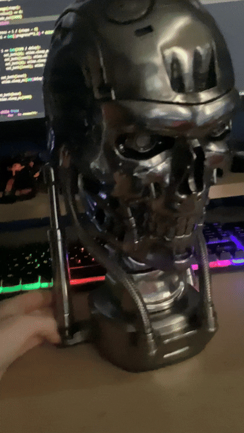

Photo from 2026
Hi, I'm Gethin - a student and self-taught hardware & software developer with a passion for learning about and building real, functional projects across a variety of fields such as embedded systems, microcontrollers, robotics, PCB design and digital fabrication.
Over the past few years, I've worked on a wide range of projects, from custom macro keyboards and battle robots to analog circuits, timelapse automation systems and wireless multi-tool devices.
I'm aiming for a career in computer science and I use each project as a way to build the skills and knowledge I'll need in the industry.
I also often use my projects as a way to learn something new - whether it be designing a switch matrix for a macropad, writing custom G-code for my 3D printer, experimenting with RF and infrared communication, or building timing circuits with analog components.
I built this portfolio website to bring all my projects together in one place, to show how my skills have progressed over time and to allow me to look back and see what I have managed to accomplish.
It also lets me present my projects clearly and neatly, without the clutter of different GitHub repos and random folders. Feel free to scroll around and view the source code on GitHub